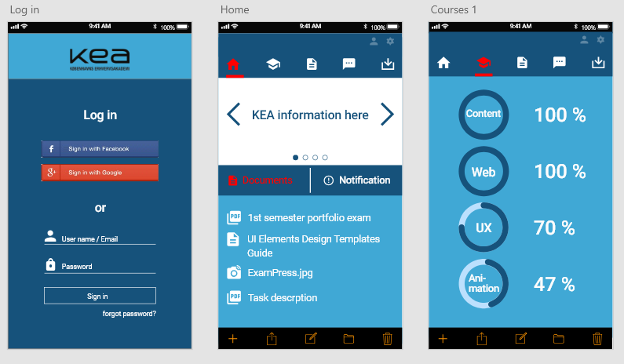
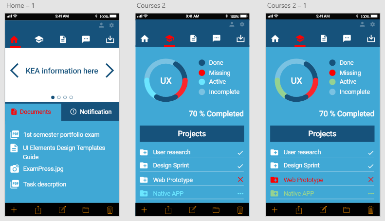

02.01.03 Link to Video: Story Without Words
Bullying is a problem that can tear down lives and break people apart. In the short, but full of events video, we hope we could highlight some of the very destructive behaviors met in all sorts environments, from school, to college and even to the workspace. In the final sequence of the video, the bully becomes the bullied so that people can figure out that it’s a vicious circle that should not have any beginning.
04.04.01 Design Sprint Native App
The long term goal for the native app is a highly intuitive user friendly application for the typical student, a person who is always in a rush and in need of clear deadlines and time management. That is why we tried to provide a smooth application with features found in other popular learning tools that can provide the best user experience.
 